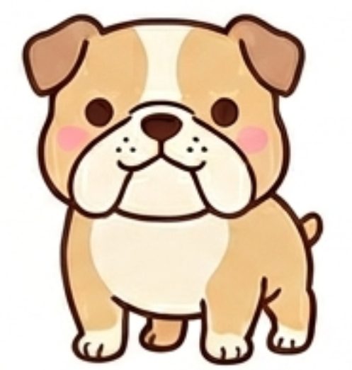

あなたのフレンドタイプは...

BSAD：威風堂々ブルドッグ
あなたは、グループ内で「自分が余計なことを言って空気を壊したくない」「喋って独りよがりになるくらいなら、みんなの話をしっかり聞いて場を回したい」という、高いバランス感覚と優れた配慮のセンスを持った人です。
内面には非常に強いこだわりやマイルール（頑固さ）を秘めていますが、それを他人に押し付けることはありません。むしろ、自分の中に明確な芯があるからこそ、それが周囲から浮いてしまったり、場の空気をシラけさせてしまったりすることを人一倍気にかけています。
自分から進んで奇想天外なノリを仕掛けるタイプではなく、まずは人の話をじっくりと受け止める。その上で、話が脱線しすぎたり、おかしな方向へ行きそうになったりしたときに、的確な意見をパッと出して場を安心感のある日常に戻せる、頼れる「大人のまとめ役」です。
友達から見たあなたは、ズバリ「個性の強いメンバーがどれだけ暴れても、きれいに場を収めてくれるグループの背骨」です。
みんなが自分の話したいことを一斉に喋ったり、お調子者が無茶なノリを始めたりしたとき、あなたは一歩引いてその様子を「うんうん」と聞いています。そして、場がグダグダになる一歩手前で、「いや、話が進んでないから」「それはおかしいでしょ」と、誰もが心の中で思っていたことを絶妙なタイミングで言葉にしてくれます。
友達の間では「ブルドッグがいないと、会話が一生着地しない」「ブルドッグがいるから、安心してバカなノリができる」と、絶大な信頼を寄せられています。
自分が笑いの中心になって目立とうとすることは少ないですが、あなたが人の話をしっかりと聞き、要所要所で入れる軌道修正やまとめ役としての立ち回りが、グループの心地よさを何倍も高めています。友達は、あなたのその「絶対に軸がブレない大人の安定感」に全力で甘え、信頼しています。
自分の話ばかりを押し通そうとせず、他人の話を最後まで丁寧に聞くことができるため、メンバー全員があなたの前では安心して自分の話をすることができます。
場の空気が悪くなったり、収集がつかなくなったりしそうな瞬間に、サラッと的確な意見やツッコミを入れて、いつもの楽しい空気に引き戻すことができます。
自分の中にしっかりとした考え（芯）を持ちながらも、それを周囲に強要せず、みんなの個性を尊重して後ろから支える器の広さがあります。
あなたの「聞き手に回り、場を収める」というスタンスはグループの治安維持に不可欠ですが、あまりにも周りの話を拾うことばかりに徹していると、時に「自分の本音をあまり見せてくれない、少し壁のある人」と思われてしまうことがあります。あなたが常に「スベらないための安全な立ち回り」をしてまとめ役に終始していると、友達は「ブルドッグ自身のプライベートな話や、もっとくだらない打っちゃけ話も聞いてみたいのにな」と、少し寂しく感じることがあります。
周りがあなたを頼るのは、あなたの聞き上手さと的確な視点をリスペクトしているからです。しかし、たまにはまとめ役の手を緩めて、あなた自身が「実は最近こんなバカなこと考えててさ」と、ちょっと失敗するかもしれないような個人的な話や、意外な一面をさらけ出してみてください。
あなたが役割から一瞬だけ降りて、みんなと同じ目線で無防備に笑い合っている姿を見たとき、友達は親近感が爆発し、あなたとの心の距離がさらに一歩縮まるはずです。